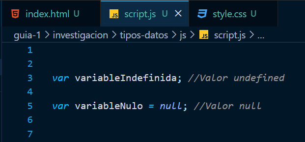

Es importante conocer estos dos conceptos para programar eficazmente en JavaScript pues nos pueden aparecer en nuestro código y pueden ser una gran ayuda o un error indeseado si no sabemos cómo tratarlos.
Tenemos que los tipos de datos son datos primarios de JavaScript y que simbolizan el vacío o ausencia de valor, pero en realidad poseen pequeñas diferencias técnicas que no les permite ser iguales completamente.
Pues undefined es una propiedad global que representa el valor de una variable cuando no ha sido declarada o no se le ha asignado un valor.
